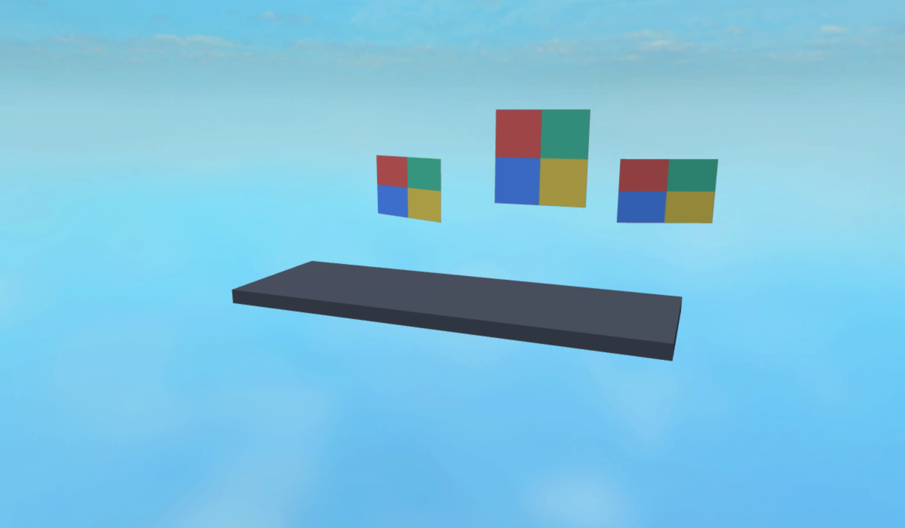

Three panels share one live EditableMesh and a tinted checkerboard EditableImage. A nested scene includes rotated panels, nonuniform size, off-center mesh coordinates, explicit PBR maps, and a block Part. The scene is exported to GLB and reimported using Rodeo's new scene APIs.
Validation: hierarchy, primitive bindings, mesh/image sharing, live edits, skin poses, source joint mappings, independent cloned rigs, procedural roots, and payloads over 4 MiB are covered by automated tests. Rendered PBR panels match the baseline pixel for pixel in the panel region.

Known material approximation: the native SmoothPlastic plinth is converted to glTF PBR and returns with slightly different shading. Export reports this explicitly. Geometry and face normals are preserved. Native Roblox materials are not a lossless glTF representation.
Iteration notes: visual inspection exposed missing explicit face normals in generated block meshes; these are now emitted and verified by a regression assertion. The textured panels use explicit roughness and metalness maps to isolate scene transport from native material defaults. Panel region (480,130)–(965,310): mean absolute RGB difference 0. Full frame: 0.590 / 0.522 / 0.399 on the 0–255 channel scale.
Reproduce these captures · rodeo run visual-reviews/mesh/scenes/capture.luau
{kind=link}
{kind=link}